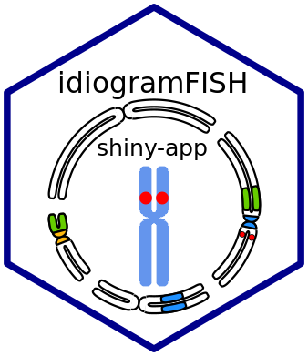

| idiogramFISH-package {idiogramFISH} | R Documentation |

Plot idiograms of karyotypes, plasmids, circular chr. having a set of data.frames for chromosome data and optionally mark data. Two styles of chromosomes can be used: without or with visible chromatids. Supports micrometers, cM and Mb or any unit. Three styles of centromeres are available: triangle, rounded and inProtein; and six styles of marks are available: square (squareLeft), dots, cM (cMLeft), cenStyle, upArrow (downArrow), exProtein (inProtein); its legend (label) can be drawn inline or to the right of karyotypes. Idiograms can also be plotted in concentric circles. It is possible to calculate chromosome indices by Levan et al. (1964) doi: 10.1111/j.1601-5223.1964.tb01953.x, karyotype indices of Watanabe et al. (1999) doi: 10.1007/PL00013869 and Romero-Zarco (1986) doi: 10.2307/1221906 and classify chromosomes by morphology Guerra (1986) and Levan et al. (1964).
Maintainer: Fernando Roa froao@unal.edu.co
Other contributors:
Mariana PC Telles [contributor]
Useful links:
Report bugs at https://gitlab.com/ferroao/idiogramFISH/-/issues